Here comes the Part 3 on learning with not enough data (Previous: Part 1 and Part 2). Let’s consider two approaches for generating synthetic data for training.
- Augmented data. Given a set of existing training samples, we can apply a variety of augmentation, distortion and transformation to derive new data points without losing the key attributes. We have covered a bunch of augmentation methods on text and images in a previous post on contrastive learning. For the sake of post completeness, I duplicate the section on data augmentation here with some edits.
- New data. Given few or even no data points, we can rely on powerful pretrained models to generate a number of new data points. This is especially true in recent years given the fast progress in large pretrained language models (LM). Few shot prompting is shown to be effective for LM to learn within context without extra training.
Data Augmentation
The goal of data augmentation is to modify the input format (e.g. text wording, visual appearance) while the semantic meaning stays unchanged.
Image Augmentation
Basic Image Processing Operations
There are several ways to modify an image while retaining its semantic information. We can use any one of the following augmentation or a composition of multiple operations.
- Random cropping and then resize back to the original size.
- Random color distortions
- Random Gaussian blur
- Random color jittering
- Random horizontal flip
- Random grayscale conversion
- And many more. Check PIL.ImageOps for inspiration.
Task-Specific Augmentation Strategies
If the downstream task is known, it is possible to learn the optimal augmentation strategies (i.e. what processing operations to use and how to combine them in sequence) to maximize the downstream task performance.
- AutoAugment (Cubuk, et al. 2018) is inspired by neural architecture search, AutoAugment frames the problem of learning best data augmentation operations (i.e. shearing, rotation, invert, etc.) for image classification as an RL problem and looks for the combination that leads to the highest accuracy on the evaluation set. AutoAugment can be executed in adversarial fashion (Zhang, et al 2019).
- RandAugment (Cubuk et al., 2019) greatly reduces the search space of AutoAugment by controlling the magnitudes of different transformation operations with a single magnitude parameter.
- Population based augmentation (PBA; Ho et al., 2019) combines PBT (“population based training”; Jaderberg et al, 2017) with AutoAugment, using the evolutionary algorithm to train a population of children models in parallel to evolve the best augmentation strategies.
- Unsupervised Data Augmentation (UDA; Xie et al., 2019), among a set of possible augmentation strategies, selects a subset to minimize the KL divergence between the predicted distribution over an unlabelled example and its unlabelled augmented version.
Image Mixture
Image mixture methods can construct new training examples from existing data points.
- Mixup (Zhang et al., 2018) runs global-level mixture by creating a weighted pixel-wise combination of two existing images $I_1$ and $I_2$: $I_\text{mixup} \gets \alpha I_1 + (1-\alpha) I_2$ and $\alpha \in [0, 1]$.
- Cutmix (Yun et al., 2019) does region-level mixture by generating a new example by combining a local region of one image with the rest of the other image. $I_\text{cutmix} \gets \mathbf{M}_b \odot I_1 + (1-\mathbf{M}_b) \odot I_2$, where $\mathbf{M}_b \in \{0, 1\}^I$ is a binary mask and $\odot$ is element-wise multiplication. It is equivalent to filling the cutout (DeVries & Taylor 2017) region with the same region from another image.
- Given a query $\mathbf{q}$, MoCHi (“mixing of contrastive hard negatives”; Kalantidis et al. 2020) maintains a queue of $K$ negative features $Q={\mathbf{n}_1, \dots, \mathbf{n}_K }$ and sorts these negative features by similarity to the query, $\mathbf{q}^\top \mathbf{n}$, in descending order. The first $N$ items in the queue are considered as the hardest negatives, $Q^N$. Then synthetic hard examples can be generated by $\mathbf{h} = \tilde{\mathbf{h}} / |\tilde{\mathbf{h}}|_2$ where $\tilde{\mathbf{h}} = \alpha\mathbf{n}_i + (1-\alpha) \mathbf{n}_j$ and $\alpha \in (0, 1)$. Even harder examples can be created by mixing with the query feature, $\mathbf{h}’ = \tilde{\mathbf{h}’} / |\tilde{\mathbf{h}’}|_2$ where $\tilde{\mathbf{h}’} = \beta\mathbf{q} + (1-\beta) \mathbf{n}_j$ and $\beta \in (0, 0.5)$.
Text Augmentation
Lexical Edits
Easy Data Augmentation (EDA; Wei & Zou 2019) defines a set of simple but powerful operations for text augmentation. Given a sentence, EDA randomly chooses and applies one of four simple operations:
- Synonym replacement (SR): Replace $n$ random non-stop words with their synonyms.
- Random insertion (RI): Place a random synonym of a randomly selected non-stop word in the sentence at a random position.
- Random swap (RS): Randomly swap two words and repeat $n$ times.
- Random deletion (RD): Randomly delete each word in the sentence with probability $p$.
where $p=\alpha$ and $n=\alpha \times \text{sentence_length}$, with the intuition that longer sentences can absorb more noise while maintaining the original label. The hyperparameter $\alpha$ roughly indicates the percent of words in one sentence that may be changed by one augmentation.
EDA is shown to improve the classification accuracy on several classification benchmark datasets compared to baseline without EDA. The performance lift is more significant on a smaller training set. All the four operations in EDA help improve the classification accuracy, but get to optimal at different $\alpha$’s.

Contextual Augmentation (Kobayashi, 2018) replaces word $w_i$ at position $i$ by sampling from a probability distribution learned by a bidirectional LM such as BERT, $p(.\mid S\setminus{w_i})$. In this way, the words are substituted by synonyms, or similar words suitable for the context. To guarantee such operations do not alter the labels, the LM is fit to be label-conditioned bidirectional LM. Conditional BERT (CBERT; Xing Wu et al. 2018) extends BERT to predict masked tokens conditioned on the class label and can be used for contextual augmentation prediction.
Back-translation
Back-translation produces augmented data by translating text samples to another language and then translating them back. The translation happens in two ways and both directions should have decent enough performance to avoid significant loss of semantic meaning.
Mix-up
It is also possible to apply Mixup to text (Guo et al. 2019) but on the embedding space to obtain some performance gain. The proposed method relies on a specially designed model architecture to operate the prediction on the word or sentence embedding. Adding adversarial noise in the embedding space as a way of data augmentation is shown to improve the generalization of model training (Zhu et al. 2019).
Audio Augmentation
Here is a list of several commonly used audio data augmentation methods, operated on raw audio or spectrograms, summarized by Wang & van den Oord (2021).
Audio mixup. Given two audio clips $\mathbf{x}_1$ and $\mathbf{x}_2$, the mixed-up version $\hat{\mathbf{x}} = \alpha \mathbf{x}_1 + (1-\alpha)\mathbf{x}_2$ should be associated with the label of the more dominant input. The audio mixup augments the data with more realistic noise.
Time masking. A small consecutive chunk of the audio can be masked without losing semantic information.
Frequency masking. A small amount of frequency components on the spectrogram can be dropped off and it should not change the associated label.
Frequency shift. The spectrogram can be shifted by an integer between $[-F, F]$, where $F$ is the maximum shift size. It is a cheap augmentation to change the pitch of the audio.
Architectural Augmentation
Models with dropout layers can create augmented samples by applying different dropout masks on the same input sample. For example, in the contrastive learning model SimCSE (Guo et al. 2021), a sample is simply fed into the encoder twice with different dropout masks and these two versions are the positive pair where the other in-batch samples are considered as negative pairs.
Dropout augments data by adding noise onto the internal representation of the model. It can be applied in a more structured way, such as in cutoff (Shen et al. (2020)), where random chunks of the token embedding matrix are removed.
Data Synthesis
Given that generating high-quality, photorealistic images is a lot more difficult than generating human-like natural language text and recent success with large pretrained language models, this section only focuses on text generation. To read more on how to synthesize realistic images, check posts on GAN, VAE, flow and diffusion models.
Language Model as Noisy Annotator
Wang et al. (2021) explored ways to leverage GPT-3 as a weak annotator via few-shot prompting, achieving 10x cheaper than human labeling. The paper argues that by using data labeled by GPT-3, it essentially performs self-training: The predictions on unlabeled samples apply entropy regularization on the model to avoid high class overlaps so as to help improve the model performance.
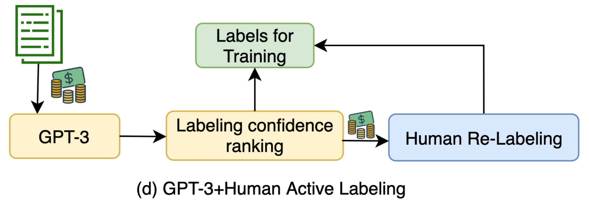GPT-3-labeled samples selected by active learning with highest uncertainty are sent to human labelers to be re-annotated. The few-shot prompt contains a small number of human labeled examples and thus the labeling cost is restricted. Synthetic samples are ranked by predicted logits of label $y$ and those with the lowest scores go through relabeling.
GPT-3 labeling achieves better results in the low-cost regime, but has a gap with human labeling when enough money is spent on data collection. This implies the following inequation, although to what extent “a lot” or “noisy” means depends on the task details.
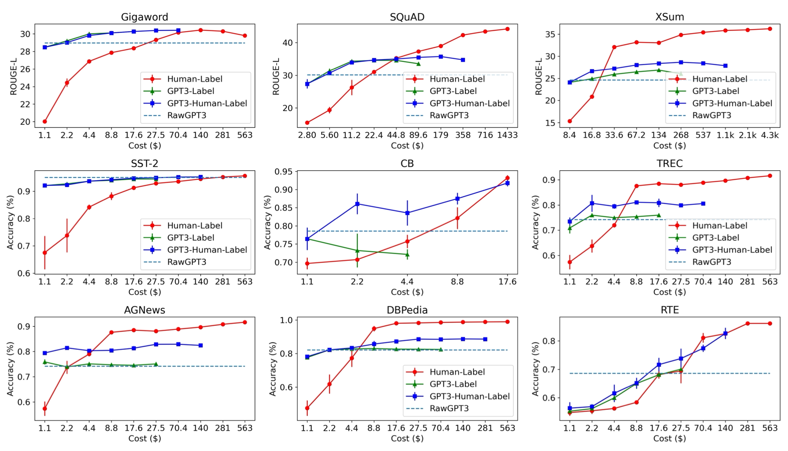A lot of high-quality data > A lot of noisy data > A little high quality data.
Language Model as Data Generator
If enough training dataset for text classification tasks are available, we can fine-tune language models to synthesize more training samples conditioned on labels (Anaby-Tavor et al. 2019, Kumar et al. 2021).
Language-model-based data augmentation (LAMBADA; Anaby-Tavor et al. 2019) takes such an idea, where the process involves fine-tuning both a classifier and a sample generation model.
- Train a baseline classifier using the existing training dataset: $h = \mathcal{A}(\mathcal{D}_\text{train})$.
- Independently of step 1, a LM $\mathcal{M}$ is fine-tuned on $\mathcal{D}_{\text{train}}$ to obtain $\mathcal{M}_{\text{tuned}}$.
- Synthesize a labeled dataset $\mathcal{D}^*$ by generating the continuation of the sequence
y[SEP]untilEOSusing $\mathcal{M}_\text{tuned}$. - Filter synthesized dataset by,
- (1) Verifying that the predicted label is correct $h(x)=y$;
- (2) Selecting the top ranked samples when they are ranked by the classifier probability. $\mathcal{D}_\text{syn} \subset \mathcal{D}^*$. They generate 10x more samples needed for augmentation and only the top 10% synthesized samples with highest confidence scores remain.
The final classifier is trained on $\mathcal{D}_\text{syn} \cup \mathcal{D}_\text{train}$ . The process can be repeated multiple times, but it is unclear whether the benefit would quickly diminish or the repetitive process would bring in self-bias.
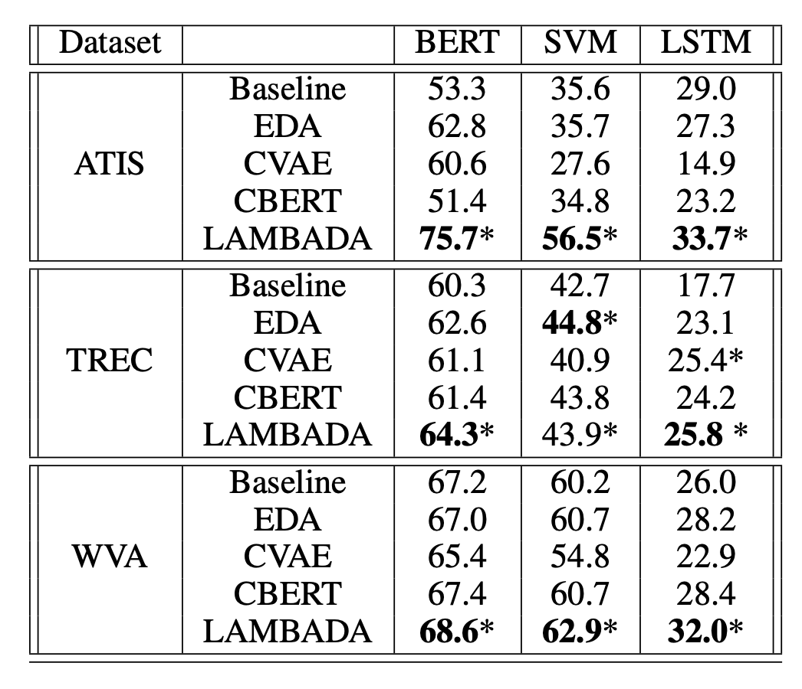To simplify LAMBADA, we can actually remove the dependency of a fine-tuned generation model and an existing training dataset of a decent size (Step 2 above). Unsupervised data generation (UDG; Wang et al. 2021) relies on few-shot prompting on a large pretrained language model to generate high-quality synthetic data for training. Opposite to the above approach where LM is asked to predict $y$ given $\mathbf{x}$, UDG instead synthetizes the inputs $\mathbf{x}$ given labels $y$. Then a task-specific model is trained on this synthetic dataset.
Schick & Schutze (2021) proposed a similar idea but on the NLI task instead of classification, asking PLM to write sentence pairs that are similar or different while the model is prompted with task-specific instructions.

The few-shot prompts of UDG contain a small number of unlabeled examples, as well as a task-specific natural language description of the desired label. Because some generated examples are noisy, they implemented noisy label annealing (NLA) techniques to filter potentially misaligned samples out during the training processes. NLA gradually removes noisy training signals in time during training when the model starts to disagree with its pseudo label with high confidence. At each training step $t$, a given example $(\mathbf{x}_i, \hat{y}_i)$ is considered noisy and should be removed if:
- The model predicted probability is higher than a threshold $p(\bar{y}_i \vert \mathbf{x}_i) > \mu_t$ where $\bar{y}_i = \arg\max_y p(y \vert \mathbf{x}_i)$;
- And the predicted label is different from the synthetic label, $\bar{y}_i \neq \hat{y}_i$.
Note that the threshold $\mu_t$ is time-dependent, initialized as 0.9 and then gradually annealed to $1/\text{num_of_classes}$ in time.
As shown in their experiments, the improvement of UDG over few-shot inference is quit significant, where NLA brings in some extra boost. The results are even comparable with supervised fine-tuning on several cases.
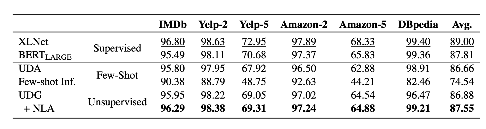Han et al (2021) achieved SOTA results on translation tasks using few-shot data generation, distillation and back-translation. The proposed method contains the following steps, assuming no access to paired translation data:
- Zero-shot Generation. First use the zero-shot translation ability of a pre-trained LM to generate translations for a small set of unlabeled sentences.
- Few-shot Generation. Then amplify these zero-shot translations by using them as few-shot demonstrations to gather an even larger synthetic dataset.
- Distillation. Fine-tune the model on this dataset. The translation task is formulated as a language modeling task
[L1] <seq1> [[TRANSLATE]] [L2] <seq2>.given a pair of two sequences<seq1, seq2>in two different languages. At test-time, the LM is prompted with[L1] <seq> [[TRANSLATE]] [L2]and a candidate translation<sampledSeq>is parsed from the sampled completion. - Back-translation. Continue fine-tuning on the back-translation dataset where the order of samples is reversed,
<sampledSeq, seq>. - Step 1-4 can be repeated.
The success of the above method depends on a good pretrained LM to kick off the initial translation dataset. Iterative few-shot generation and distillation with back-translation is an effective way to extract and refine the translation capability out of a pretrained LM and further to distill that into a new model.
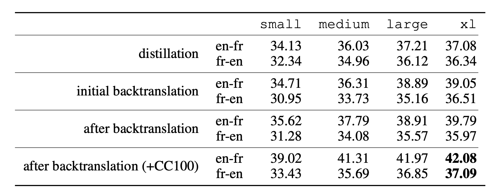How to Quantify Generated Data Quality?
Given all the generated data, either by data augmentation or data synthesis, how can we quantify data quality in terms of how they improve model generalization? Gontijo-Lopes et al. (2020) introduced two dimensions to track, affinity and diversity.
- Affinity is a model-sensitive metric for distribution shift, quantifying how much an augmentation shifts the training data distribution from what a model learned.
- Definition: The performance difference between the model tested on clean data vs augmented data, while the model is trained on clean data.
- As a comparison, KL can also measure distribution shift but does not consider the model performance.
- Diversity is a measure of augmentation complexity, measuring the complexity of the augmented data with respect to the model and learning procedure.
- Definition: The final training loss of a model trained with a given augmentation.
- Another potential diversity measure is the entropy of the transformed data.
- A third potential diversity measure is the training time needed for a model to reach a given training accuracy threshold.
- All three metrics above are correlated.
The final model performance is dependent on both metrics to be high enough.
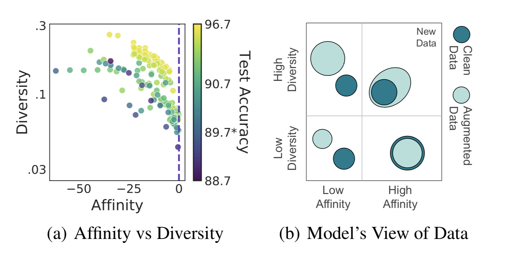There are many quantitative metrics on relevancy and diversity, in different formations depending on whether a reference is available, such as perplexity, BLEU for text and inception score for images. I’m skipping the list of concrete quantitative metrics on quality here, given it could be very long.
Training with Noisy Data
It is convenient to collect a large amount of noisy data via model generation or data augmentation, but it is hard to guarantee that augmented and generated data can be 100% accurate. Knowing that deep neural networks can easily overfit noisy labels and “memotize” corrupted labels, we can apply the techniques for training on noisy labels (noise-robust training) when using generated data to stabilize and optimize the performance. Please check this survey paper (Song et al. 2021) on learning from noisy labels for a more thorough coverage of related work.
Regularization and Robust Architecture
Generally speaking, mechanisms designed for avoiding overfitting should help improve training robustness when working with moderately noisy data, such as weight decay, dropout, batch normalization. In fact, good data augmentation (i.e. only non-essential attributes are modified) can be considered as a way of regularization as well.
A different approach is to enhance the network with a dedicated noisy adaptation layer to approximate the unknown projection of label corruption (Sukhbaatar et al. 2015, Goldberger & Ben-Reuven, 2017).
Sukhbaatar et al. (2015) introduced an extra linear layer $Q$ into the network architecture to adapt the predictions to match the noisy label distribution. The noise matrix $Q$ is initially fixed to the identity function while only the base model parameters is updated. After some time, $Q$ starts to be updated and expected to capture the noise in the data. The noise matrix is trained with regularization to encourage it to match the noise distribution while keeping the base model prediction accurate for true labels.
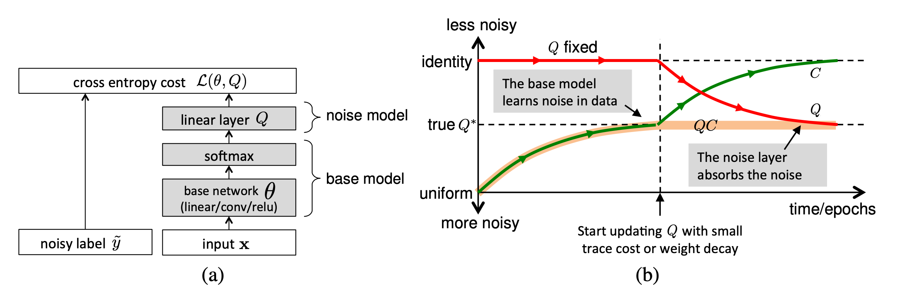However, it is hard to guarantee such a noise matrix layer would only capture the noise transition distribution and it is actually non-trivial to learn. Goldberger & Ben-Reuven (2017)) proposed to add an additional softmax layer end-to-end with the base model and apply the EM algorithm by treating the correct labels as latent random variable and the noise processes as a communication channel with unknown parameters.
Robust Learning Objective
Besides the most commonly used cross entropy loss, some other choices of learning objectives are shown to be more robust to noisy labels.
For example, MAE (mean absolute error) is more robust to noisy labels than CCE (categorical cross entropy), as it treats every sample equally (Ghosh et al. 2017). Lack of different weighting among training samples of MAE lead to significantly longer training time. Motivated by the tradeoff between MAE and CCE, Zhang & Sabuncu (2018) proposed generalized cross entropy (GCE), a generalization of CCE loss to be robust to noisy data.
To exploit the benefits of both the noise-robustness provided by MAE and the implicit weighting scheme of CCE, GCE adopts the the negative Box-Cox transformation as a loss function:
$$ \mathcal{L}_q(f(\mathbf{x}_i, y_i = j)) = \frac{1 - f^{(j)}(\mathbf{x}_i)^q}{q} $$
where $f^{(j)}$ denotes the $j$-th element of $f(.)$ and $q \in (0, 1]$. $\mathcal{L}_q$ is equivalent to CCE when $q \to 0$ and becomes MAE when $q=1$. Empirical experiments show that there exists a threshold of $q$ with which overfitting never emerges and the noisier the data the higher such a threshold should be.
Given true and predicted labels, $y_i, \hat{y}_i \in \{0, 1\}$ and let $u_i=y_i \cdot \hat{y}_i$, the zero-one loss, $\mathcal{L}_{01}(\mathbf{u}) = \sum_{i=1}^n \mathbb{1}[u_i < 0]$, is another learning subjective shown to be robust to noisy data. Minimizing the empirical risk with the zero-one loss is shown to be equivalent to minimizing the empirical adversarial (worse-case) risk (Hu et al 2018). Because the worst-case risk is the upper bound of the classification risk of the clean data distribution, minimizing the worst-case risk can lead to decreased true risk, which makes the zero-one loss especially robust. However, the zero-one loss is non-differentiable and cannot be optimized directly. One solution is to approximate an upper bound of the zero-one loss and to minimize the upper bound loss instead.
The hinge loss, $\mathcal{L}_\text{hinge}(\mathbf{u}) = \sum_{i=1}^n \max(0, 1 - u_i)$, defines a rough upper bound of the zero-one loss. Lyu & Tsang (2020) proposed a curriculum loss (CL), which is a tighter upper bound compared to a conventional surrogate loss like the hinge loss, $\mathcal{L}_\text{01}(\mathbf{u}) \leq \mathcal{L}_\text{CL}(\mathbf{u}) \leq \mathcal{L}_\text{hinge}(\mathbf{u})$.
$$ \mathcal{L}_\text{CL}(\mathbf{u}) = \min_{\mathbf{w}\in\{0,1\}^n}\max(\sum_{i=1}^n w_i \ell(u_i), n - \sum_{i=1}^n w_i + \sum_{i=1}^n\mathbb{1}[u_i < 0]) $$
where $\ell(u_i)$ is a base surrogate loss for the zero-one loss (e.g. hinge loss) and the optimal weighting variable $\mathbf{w}$ is to be learned.
Given a label corruption rate $\rho$, the noise pruned curriculum loss (NPCL) is constructed based on the intuition that an ideal model should correctly classify $n(1-\rho)$ samples with clean labels but misclassify $n\rho$ corrupted labels. If $\rho$ is a known prior, we would know how many samples (with largest losses) to be pruned. Assuming $\ell(u_1) \leq \dots \leq \ell(u_n)$, then $u_{n(1-\rho)+1} = \dots = u_n =0$ and the following NPCL is the basic CL for only $n(1-\rho)$ samples:
$$ \text{NPCL}(\mathbf{u}) = \min_{\mathbf{w}\in\{0,1\}^{n(1-\rho)}} \max(\sum_{i=1}^{n(1-\rho)} w_i \ell(u_i), n(1-\rho) - \sum_{i=1}^{n(1-\rho)} w_i) $$
When experimenting on CIFAR-10, NPCL is comparable with GCE and performs better when the noise rate increases.
Label Correction
Since it is known some labels are incorrect, noise-robust training can explicitly take the label correction into consideration.
One approach is to rely on the estimation of a noise transition matrix and use that to correct the forward or backward loss, named F-correction (Patrini et al. 2017). Let’s first assume that there are $k$ classes and the noise transition matrix $C \in [0, 1]^{k\times k}$ is observable and the label flipping probability does not depend on the sample input but only the label (i.e. known as random classification noise, RCN). Let $\tilde{y}$ denote a corrupted label. Each entry of $C$ represents the probability of one label flipping to another1,
$$ C_{ij} = p(\tilde{y}= j \vert y =i, \mathbf{x}) \approx p(\tilde{y}= j \vert y =i) $$
Then we can proceed a forward label correction procedure to incorporate the prior knowledge of noisy transition matrix into the prediction.
$$ \begin{aligned} \mathcal{L}(\hat{p}(\tilde{y}\vert\mathbf{x}), y) &= - \log \hat{p}(\tilde{y}=i\vert\mathbf{x}) \\ &= - \log \sum_{j=1}^k p(\tilde{y}=i\vert y=j) \hat{p}(y=j\vert\mathbf{x}) \\ &= - \log \sum_{j=1}^k C_{ji} \hat{p}(y=j\vert\mathbf{x}) \end{aligned} $$
In matrix form, we have $\mathcal{L}(\hat{p}(y \vert \mathbf{x})) = - \log C^\top \hat{p}(y \vert \mathbf{x})$. However, such a noise transition matrix is usually unknown. If we have access to a clean dataset, the noise matrix $C$ can be estimated (Hendrycks et al. 2018) by calculating confusion matrix on the clean data. Let’s denote a clean trusted dataset as $\mathcal{D}_c$ and a noisy dataset as $\mathcal{D}_n$ going forward.
$$ \hat{C}_{ij} = \frac{1}{\vert \mathcal{A}_i\vert} \sum_{\mathbf{x} \in \mathcal{A}_i} \hat{p}(\tilde{y}=j \vert y=i, \mathbf{x}) \approx p(\tilde{y}=j \vert y=i) $$
where $\mathcal{A}_i$ is a subset of data points from $\mathcal{D}_c$ with label $i$.
Let $f(x) = \hat{p}(\tilde{y} \vert \mathbf{x}; \theta)$ and this model should be trained with $\mathcal{L}(f(\mathbf{x}), y)$ on clean data $\mathcal{D}_c$ and with $\mathcal{L}(\hat{C}^\top f(\mathbf{x}), \hat{y})$ on noisy data $\mathcal{D}_n$.
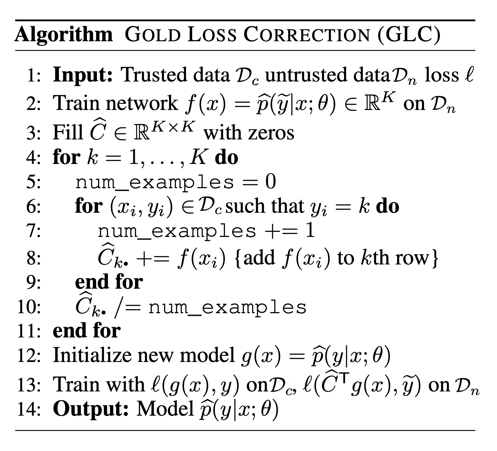If the trusted training dataset $\mathcal{D}_c$ gets large, we can train a neural network only on clean data and distill its knowledge into the primary model (i.e. the final model to make predictions at test time) using corrected pseudo labels (Li et al. 2017). The primary model is trained on the entire dataset, $\mathcal{D} = \mathcal{D}_c \cup \mathcal{D}_n$. Optionally the “side” information of label relations in the knowledge graph, if available, can be incorporated into distillation to help the robustness of the predictions of the network that is trained on limited data.
The label correction distillation works as following:
- First train an auxiliary model $f_c$ from the small clean dataset $\mathcal{D}_c$ to provide a soft label for each sample $x_i$, $s_i = \delta(f_c(\mathbf{x}_i)/T)$ is the sigmoid activation with temperature $T$.
- Because the clean dataset is not large, $f_c$ is likely to overfit, Li et al. (2017) turn to a knowledge graph $\mathcal{G}$ that defines the relations in the label space and propagate the prediction among labels accordingly. The new soft label is donated as $\hat{s}_i = \mathcal{G}(s_i)$.
- The primary model $f$ is trained with predictions from $f_c$ to imitate,
$$ \mathcal{L}(y_i, f(\mathbf{x}_i)) = \text{CE}(\underbrace{\lambda y_i + (1 - \lambda) \hat{s}_i}_\text{pseudo label}, f(\mathbf{x}_i)) $$
Sample Reweighting and Selection
Some samples may be more likely to have inaccurate labels than others. Such estimation gives us intuition on which samples should be weighted less or more in the loss function. However, considering two types of biases in training data, class imbalance and noisy labels, there is actually a contradictory preference — We would prefer samples with larger loss to balance the label distribution but those with smaller loss for mitigating the potential noise. Some work (Ren et al. 2018) thus argue that in order to learn general forms of training data biases, it is necessary to have a small unbiased validation to guide training. The sample reweighting methods presented in this section all assume access to a small trusted set of clean data.
Considering a binary classification task with random classification noise, $y, \hat{y} \in \{-1, +1\}$, the label flipping probabilities, $\rho_{-1}, \rho_{+1} \in [0, 0.5)$, are defined as:
$$ \rho_{-1} = P(\tilde{y} = +1 \vert y=-1)\quad\rho_{+1} = P(\tilde{y}=-1 \vert y =+1) $$
Liu & Tao (2015) applies importance reweighting to adjust the weighted distribution of observed $\hat{y}$ to match the distribution of unobservable $y$. Let $\mathcal{D}$ be the true data distribution and $\mathcal{D}_\rho$ be the corrupted version.
$$ \begin{aligned} \mathcal{L}_{\ell,\mathcal{D}}(f) &= \mathbb{E}_{(\mathbf{x},y)\sim \mathcal{D}}[\ell(f(\mathbf{x}), y)] \\ &= \mathbb{E}_{(\mathbf{x},\tilde{y})\sim \mathcal{D}_\rho} \Big[ \frac{P_\mathcal{D}(\mathbf{x}, y=\tilde{y})}{P_{\mathcal{D}_\rho}(\mathbf{x}, \tilde{y})} \ell(f(\mathbf{x}), \tilde{y}) \Big] \\ &= \mathbb{E}_{(\mathbf{x},\tilde{y})\sim \mathcal{D}_\rho} \Big[ \frac{P_\mathcal{D}(y=\tilde{y} \vert \mathbf{x})}{P_{\mathcal{D}_\rho}(\tilde{y} \vert \mathbf{x})} \ell(f(\mathbf{x}), \tilde{y}) \Big] & \text{; because }P_\mathcal{D}(\mathbf{x})=P_{\mathcal{D}_\rho}(\mathbf{x}) \\ &= \mathbb{E}_{(\mathbf{x},\tilde{y})\sim \mathcal{D}_\rho} [ w(\mathbf{x}, \hat{y})\ell(f(\mathbf{x}), \tilde{y}) ] = \mathcal{L}_{w\ell,\mathcal{D}}(f) \end{aligned} $$
Because,
$$ \begin{aligned} P_{\mathcal{D}_\rho}(\tilde{y} \vert \mathbf{x}) &= P_\mathcal{D}(y = \tilde{y} \vert \mathbf{x}) P_{\mathcal{D}_\rho}(\tilde{y} \vert y=\tilde{y}) + P_\mathcal{D}(y = - \tilde{y} \vert \mathbf{x}) P_{\mathcal{D}_\rho}(\tilde{y} \vert y = - \tilde{y}) \\ &= P_\mathcal{D}(y = \tilde{y} \vert \mathbf{x}) (1 - P_{\mathcal{D}_\rho}(- \tilde{y} \vert y=\tilde{y})) + (1 - P_\mathcal{D}(y = \tilde{y} \vert \mathbf{x})) P_{\mathcal{D}_\rho}(\tilde{y} \vert y = - \tilde{y}) \\ &= P_\mathcal{D}(y = \tilde{y} \vert \mathbf{x}) (1 - \rho_{\tilde{y}}) + (1 - P_\mathcal{D}(y = \tilde{y} \vert \mathbf{x})) \rho_{-\tilde{y}} \\ &= P_\mathcal{D}(y = \tilde{y} \vert \mathbf{x})(1 - \rho_{\tilde{y}} - \rho_{-\tilde{y}}) + \rho_{-\tilde{y}} \end{aligned} $$
Thus the weight assigned to a noisy sample is,
$$ w(x, \tilde{y}) = \frac{P_\mathcal{D}(y=\tilde{y} \vert \mathbf{x})}{P_{\mathcal{D}_\rho}(\tilde{y} \vert \mathbf{x})} = \frac{P_{\mathcal{D}_\rho}(\tilde{y} \vert \mathbf{x}) - \rho_{-\tilde{y}}}{(1-\rho_0-\rho_1) P_{\mathcal{D}_\rho}(\tilde{y} \vert \mathbf{x})} $$
where $P_{\mathcal{D}_\rho}(\tilde{y} \vert \mathbf{x})$ can be estimated using a simple logistic regression, but estimating the note rates is more challenging. Naive cross-validation can work out but is costly as the quality depends on the amount of trusted labels available. The paper approximates the upper bounds for noise rates first, $\rho_\tilde{y} \leq P_{\mathcal{D}_\rho}(- \tilde{y} \vert \mathbf{x})$ and then use a mild assumption to efficiently estimate them, $\hat{\rho}_{\tilde{y}} = \min_{\mathbf{x} \in {\mathbf{x}_1, \dots, \mathbf{x}_n}} \hat{P}_{\mathcal{D}_\rho}(- \tilde{y} \vert \mathbf{x})$. In their experiments, the advantage of importance reweighting only varies across datasets and is more beneficial when the noise rates are high in general.
Sample reweighting schemes can be learned by a separate network. Learning to reweight (L2R; Ren et al. 2018) is a meta-learning approach to directly optimize the weights in pursuit of best validation performance on a known set of clean data. Each example gets assigned with the weight based on its gradient direction. The weighted loss to minimize $\theta^*(\mathbf{w})$ involves a set of training weights $\{w_i\}_{i=1}^n$ as unknown hyperparameters. These sample training weights $w_i$ are learned to minimize the loss on this unbiased validate set, $\mathcal{D}_c = \{x^\text{valid}_j\}_{j=1}^m$.
$$ \begin{aligned} \theta^{*}(\mathbf{w}) &= \arg\min_\theta \sum_{i=1}^n w_i f(x_i; \theta) \\ \text{where optimal }\mathbf{w}^{*} &= \arg\min_{\mathbf{w}, \mathbf{w} \geq \mathbf{0}} \frac{1}{m} \sum_{j=1}^m f(\mathbf{x}^\text{valid}_j; \theta^{*}(\mathbf{w})) \end{aligned} $$
The learning process involves two nested loops of optimization, so pretty expensive, 3x training time.
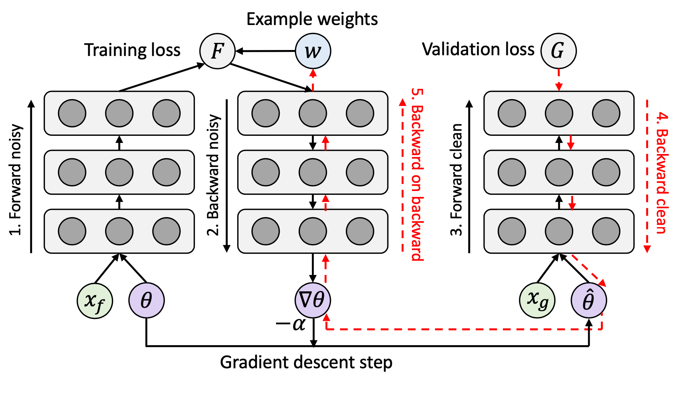They ran experiments on (1) two-class MNIST to test the robustness of L2R when the class distribution is imbalanced and (2) CIFAR-10 with noisy labels. L2R is shown to be better than other baseline methods at the time on both tasks.
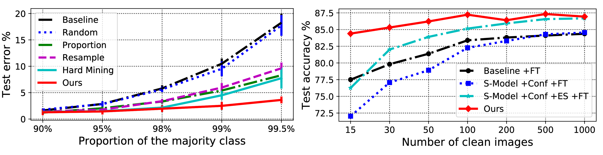MentorNet (Jiang et al. 2018) uses teach-student curriculum learning to weight data. It incorporates two different networks, a mentor and a student. The mentor network provides a data-driven curriculum (i.e. sample training weighting scheme) for the student to focus on learning likely correct labels.
Let $g_\psi$ be the MentorNet parameterized by $\psi$ , $f_\theta$ be the StudentNet parametrized by $\theta$ and $G$ be a predefined curriculum parameterized by $\lambda$. Given the training data $\mathcal{D} = \{(\mathbf{x}_i, y_i)\}_{i=1}^n$ for a $k$-class classification task, the MentorNet needs to predict a time-varying latent weight variable $\mathbf{w} \in [0, 1]^{n \times k}$ to guide the learning of StudentNet, taking an intermediate feature processed by StudentNet $f$ , $\mathbf{z}_i = \phi_{f_\theta}(\mathbf{x}_i, y_i)$:
$$ g_{\psi^{*}}(\mathbf{z}_i) = \arg\min_{w_i \in [0,1]} \mathcal{L}(\theta, \mathbf{w}), \forall i \in [1, n] $$
StudentNet learns to minimize the following learning objective,
$$ \begin{aligned} \mathcal{L}(\theta, \mathbf{w}) &= \frac{1}{n}\sum_{i=1}^n \mathbf{w}_i^\top \ell(y_i, f_\theta(\mathbf{x}_i)) + G_\lambda(\mathbf{w}) + \alpha |\theta|^2_2 \\ &= \frac{1}{n}\sum_{i=1}^n g_\psi(\mathbf{z}_i)^\top \ell_i + G_\lambda(\mathbf{w}) + \alpha |\theta|^2_2 & \text{; Let }\ell_i = \ell(y_i, f_\theta(\mathbf{x}_i)) \\ \end{aligned} $$
The mentor network $g_\psi$ is trained with cross entropy on the input $(\phi_{f_\theta}(\mathbf{x}_i, y_i), w^{*}_i)$ , where $v^*_i=1$ if $y_i$ is known to be a correct label, otherwise 0. The architecture of MentorNet does not have to be very complicated. In the paper, they adopted a LSTM layer to capture the prediction variance in time.
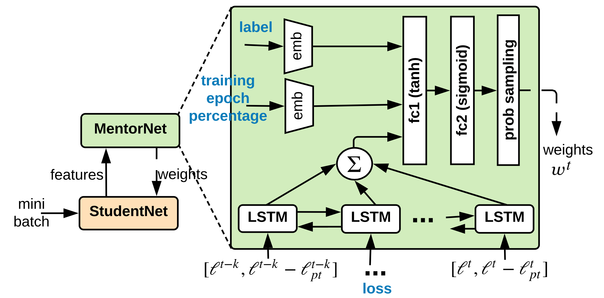Different from MentorNet where one network explicitly learns weighting scheme and curriculum for the other network, Co-teaching (Han et al. 2018) trains two neural networks, $f_1$ and $f_2$, simultaneously and lets them teach each other by feeding data to each other selectively. Co-teaching consists of three steps:
- First, each network feeds forward the current mini-batch and selects samples with potentially clean labels;
- Then two networks exchange information on which samples in the batch should be used for training. Small-loss instances are selected as they are more likely to be associated with correct labels. The percentage of the batch to select is determined by a time-dependent function $R(T)$. The value of $R(T)$ decreases in time because the network is more likely to overfit and memorize noisy labels as training progresses and thus we use a smaller sampling percentage to keep the selected data quality high.
- Finally, each network runs back-propagation updates with the data selected by its peer.
According to their experiments, co-teaching performs better than F-correction where the noise rates are high or the corruption transition matrix is not symmetric.
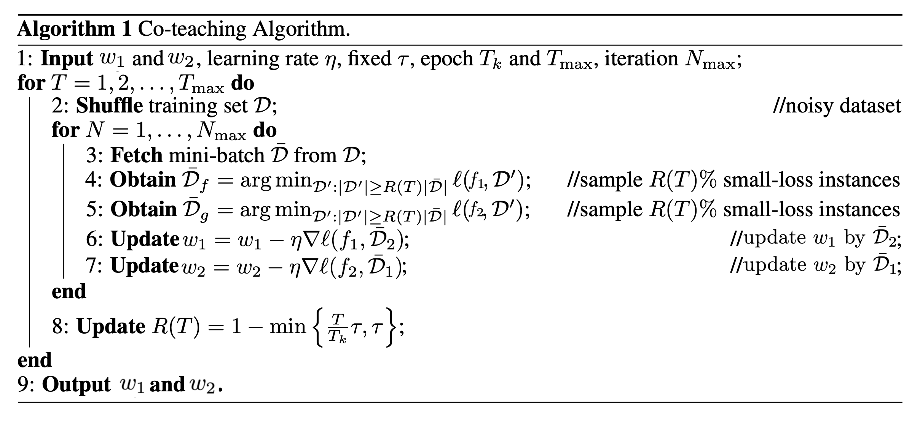Citation
Cited as:
Weng, Lilian. (Apr 2022). Learning with not enough data part 3: data generation. Lil’Log. https://lilianweng.github.io/posts/2022-04-15-data-gen/.
Or
@article{weng2022datagen,
title = "Learning with not Enough Data Part 3: Data Generation",
author = "Weng, Lilian",
journal = "Lil'Log",
year = "2022",
month = "Apr",
url = "https://lilianweng.github.io/posts/2022-04-15-data-gen/"
}
Reference
[1] Zhang et al. “Adversarial AutoAgument” ICLR 2020.
[2] Kumar et al. “Data Augmentation using Pre-trained Transformer Models.” AACL 2020 Workshop.
[3] Anaby-Tavor et al. “Not enough data? Deep learning to rescue!” AAAI 2020.
[4] Wang et al. “Want To Reduce Labeling Cost? GPT-3 Can Help.” EMNLP 2021.
[5] Wang et al. “Towards Zero-Label Language Learning.” arXiv preprint arXiv:2109.09193 (2021).
[6] Schick & Schutze. Generating Datasets with Pretrained Language Models." EMNLP 2021.
[7] Han et al. “Unsupervised Neural Machine Translation with Generative Language Models Only.” arXiv preprint arXiv:2110.05448 (2021).
[8] Guo et al. “Augmenting data with mixup for sentence classification: An empirical study.” arXiv preprint arXiv:1905.08941 (2019).
[9] Ekin D. Cubuk et al. “AutoAugment: Learning augmentation policies from data.” arXiv preprint arXiv:1805.09501 (2018).
[10] Daniel Ho et al. “Population Based Augmentation: Efficient Learning of Augmentation Policy Schedules.” ICML 2019.
[11] Cubuk & Zoph et al. “RandAugment: Practical automated data augmentation with a reduced search space.” arXiv preprint arXiv:1909.13719 (2019).
[12] Zhang et al. “mixup: Beyond Empirical Risk Minimization.” ICLR 2017.
[13] Yun et al. “CutMix: Regularization Strategy to Train Strong Classifiers with Localizable Features.” ICCV 2019.
[14] Kalantidis et al. “Mixing of Contrastive Hard Negatives” NeuriPS 2020.
[15] Wei & Zou. “EDA: Easy data augmentation techniques for boosting performance on text classification tasks.” EMNLP-IJCNLP 2019.
[16] Kobayashi. “Contextual Augmentation: Data Augmentation by Words with Paradigmatic Relations.” NAACL 2018
[17] Fang et al. “CERT: Contrastive self-supervised learning for language understanding.” arXiv preprint arXiv:2005.12766 (2020).
[18] Gao et al. “SimCSE: Simple Contrastive Learning of Sentence Embeddings.” arXiv preprint arXiv:2104.08821 (2020). [code]
[19] Shen et al. “A Simple but Tough-to-Beat Data Augmentation Approach for Natural Language Understanding and Generation.” arXiv preprint arXiv:2009.13818 (2020) [code]
[20] Wang & van den Oord. “Multi-Format Contrastive Learning of Audio Representations.” NeuriPS Workshop 2020.
[21] Wu et al. “Conditional BERT Contextual Augmentation” arXiv preprint arXiv:1812.06705 (2018).
[22 Zhu et al. “FreeLB: Enhanced Adversarial Training for Natural Language Understanding.” ICLR 2020.
[23] Affinity and Diversity: Quantifying Mechanisms of Data Augmentation Gontijo-Lopes et al. 2020 (https://arxiv.org/abs/2002.08973)
[24] Song et al. “Learning from Noisy Labels with Deep Neural Networks: A Survey.” TNNLS 2020.
[25] Zhang & Sabuncu. “Generalized cross entropy loss for training deep neural networks with noisy labels.” NeuriPS 2018.
[26] Goldberger & Ben-Reuven. “Training deep neural-networks using a noise adaptation layer.” ICLR 2017.
[27] Sukhbaatar et al. “Training convolutional networks with noisy labels.” ICLR Workshop 2015.
[28] Patrini et al. “Making Deep Neural Networks Robust to Label Noise: a Loss Correction Approach” CVPR 2017.
[29] Hendrycks et al. “Using trusted data to train deep networks on labels corrupted by severe noise.” NeuriPS 2018.
[30] Zhang & Sabuncu. “Generalized cross entropy loss for training deep neural networks with noisy labels.” NeuriPS 2018.
[31] Lyu & Tsang. “Curriculum loss: Robust learning and generalization against label corruption.” ICLR 2020.
[32] Han et al. “Co-teaching: Robust training of deep neural networks with extremely noisy labels.” NeuriPS 2018. (code)
[33] Ren et al. “Learning to reweight examples for robust deep learning.” ICML 2018.
[34] Jiang et al. “MentorNet: Learning data-driven curriculum for very deep neural networks on corrupted labels.” ICML 2018.
[35] Li et al. “Learning from noisy labels with distillation.” ICCV 2017.
[36] Liu & Tao. “Classification with noisy labels by importance reweighting.” TPAMI 2015.
[37] Ghosh, et al. “Robust loss functions under label noise for deep neural networks.” AAAI 2017.
[38] Hu et al. “Does Distributionally Robust Supervised Learning Give Robust Classifiers? “ ICML 2018.
-
$y=i$ is not a technically correct way to annotate a label being a certain value, since we usually use one-hot encoding (i.e. $\mathbf{y} = \mathbf{e}_i$). We use this form for simplicity. ↩︎